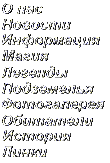

 |
Здравствуйте! Рад видеть вас тут!
Сайт посвящается Зеленому Театру. Это не только
красивейшее место Киева, которое кстати любил посещать Булгаков, но и кое-что
еще...
Дело в том, что сие живописное место на склонах
Днепра издавна ассоциировалась у людей с чем-то таинственным, а иногда
и страшным. Слухи про призраков, замурованых людей, Хозяина места, переходы
между мирами, Предвечном... Иногда они подтверждались.
Театр горел, в него регулярно били молнии
(хотя это далеко не самая высокая точка), происходили загадочные смерти
и непонятые явления. Потом руины театра облюбовали сатанисты
Но кроме тех непонятных явлений на самом месте,
Зеленка хранит и другие тайны. Под землей... Это место из-за его расположения
наряду с Лаврой было и остается
центром подземных коммуникаций с основания Киева и до нашего времени. По
непровереным данным, эта конструкция была изначально заложена в 1161 году
и имеет 9 уровней глубоко под землей.
Сейчас разрушеный театр привлекает любителей
аномалий, неформальную молодежь и других искателей приключений, а так же
просто "туристов", любителей красивых мест. Но тем не менее, настоятельно
не рекомендуется посещать те места, если Вы хоть чуть-чуть не уверены не
только в физической, но и в энергетической безопасности Вашего мероприятия.
Кроме непосредственно Зеленого Театра на сайте
расположена и постоянно обновляется информация и линки по другим аномальным
местам и явлениям, а так же по диггерству, техногенным подземельям и неформальным
движениям. Если у Вас есть информация, которая бы могла заинтересовать
посетителей сайта, и которую, как Вам кажется, можно без опасений разместить
на сайте - пишите, присылайте, приносите...
Я, дизайнер этого сайта, представитель неформальной
молодежи
и начинающий энергет, очень бы хотел услышать Ваши комментарии по поводу
сайта. Пишите мне, имя мое Max Tulyev
!!!DISCLAIMER!!!
1. Авторы сайта НЕ несут ответственности
за все то, что произошло или не произошло в связи с существованием сайта
и его посещением. Думайте своей головой!
2. Дизайн и орфография сайта меняться НЕ
будут. В то же время, ваши сообщения об ошибках в работе очень помогут
нам.
3. Баннеров и прочей рекламной муры тут тоже
никогда не будет. Цель создания сайта - НЕ заработать кучу денег
или выйти на первое место по хитам. Это прежде всего информационная база.
Скорее всего, после окончания разработки и бета-тестирования сайта доступ
к нему будет серьезно ограничен.
Last updated: 26.11.1999. See NEWS for details!
Установлены партнерские отношения с Diggers Neformal Group - группой исследователей киевских подземелий. |